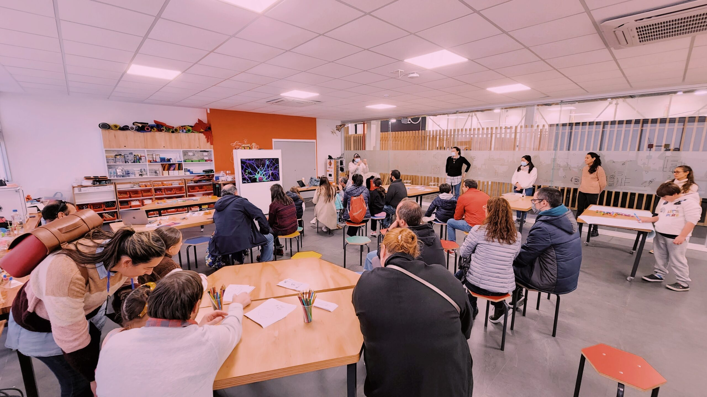

BIOFEEDBACK
BIOFEEDBACK is an artistic performance where you can experience the generation of art from brain frequencies in real time. On the one hand, sound is generated and on the other, images, which will be the next stimulus for the next generation.
In the last edition, expectators were able to get an NFT home to recall the experience!
ANT4Kids
ANT4Kids consists of workshops for teachers, children and families on neuroscience and microscopy. We seek to boost society's interest in these issues and encourage the use of low-cost devices and art at the classroom as well as at home.
Know more